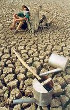

收藏
收藏


介绍
——
资源节约型社会是指在生产、流通、消费等领域，通过采取法律、经济和行政等综合性措施，提高资源利用效率，以最少的资源消耗获得最大的经济和社会收益，保障经济社会可持续发展的社会。
具体包括三个方面：第一，要确立节约资源的重要战略地位，将节约资源提升到基本国策的高度，将“控制人口，节约资源，保护环境”作为我国新时期的基本国策。并以此为依据建立综合反映经济发展、社会进步、资源利用、环境保护等因素和体现科学发展观的指标体系，彻底改变片面追求GDP增长的行为。第二，要尽快扭转高消耗、高污染的粗放型经济增长方式，逐步建立资源节约型国民经济体系。要通过技术进步改造传统产业和推动结构升级，尽快淘汰高能耗、高物耗、高污染的落后生产工艺。逐步形成有利于资源持续利用和环境保护的、合理的国际产业分工格局。推动高新技术产业和第三产业的发展和升级。第三，要倡导资源节约型的消费方式，以资源节约型的产品满足人民群众的需要。在满足群众物质文化需求的同时，倡导适度、节俭、公平和绿色的可持续消费模式，尽可能减少对资源的依赖和生态的破坏。
发展历程
——
对于中国经济发展过程中，尤其是在生产活动中存在的巨大浪费现象，党中央、国务院一直高度重视。早在1995年召开的党的十四届三中全会上，就提出了实现“经济增长方式”和“经济体制”两个根本性转变的战略要求。2003年10月，党的十六届三中全会在京召开，这次全会明确提出了“坚持以人为本，树立全面、协调、可持续的发展观”的科学发展观的要求。
此后，针对中国经济生活中存在的突出问题，一系列关系中国经济社会发展大局、促进中国经济增长方式改变、降低生产过程中的消耗的改革措施相继出台。以2004年7月1日《行政许可法》颁布实施为契机，政府各个部门清理了一大批行政许可事项，把本来应该由市场决定的行为，交还给市场。
2005年6月27日下午，胡锦涛指出，“节约能源资源，走科技含量高、经济效益好、资源消耗低、环境污染少、人力资源优势得到充分发挥的路子，是坚持和落实科学发展观的必然要求，也是关系中国经济社会可持续发展全局的重大问题。”此后，国务院颁发了《国务院做好建设节约型社会重点工作通知》，对建设节约型社会工作进行了部署。
2018年12月18日，习近平在庆祝改革开放40周年大会上的讲话指出：40年来，我们始终坚持保护环境和节约资源，坚持推进生态文明建设，生态文明制度体系加快形成，主体功能区制度逐步健全，节能减排取得重大进展，重大生态保护和修复工程进展顺利，生态环境治理明显加强，积极参与和引导应对气候变化国际合作，中国人民生于斯、长于斯的家园更加美丽宜人！
指导思想
——
以邓小平理论和“三个代表”重要思想为指导，认真贯彻党的十六大和十六届三中、四中全会精神，树立和落实以人为本、全面协调可持续的科学发展观，坚持资源开发与节约并重，把节约放在首位的方针，紧紧围绕实现经济增长方式的根本性转变，
以提高资源利用效率为核心，以节能、节水、节材、节地、资源综合利用和发展循环经济为重点，加快结构调整，推进技术进步，加强法制建设，完善政策措施，强化节约意识，尽快建立健全促进节约型社会建设的体制和机制，逐步形成节约型的增长方式和消费模式，以资源的高效和循环利用，促进经济社会可持续发展。
组成
——
资源节约型社会是一个复杂的系统，它包括资源节约观念、资源节约型主体、资源节约型制度、资源节约型体制、资源节约型机制、资源节约型体系等。资源节约观念。观念是行动的先导。资源节约观念是指人们从节省原则出发，克服浪费，合理使用资源的意识。
以提高资源利用效率为核心，以节能、节水、节材、节地、资源综合利用和发展循环经济为重点，加快结构调整，推进技术进步，加强法制建设，完善政策措施，强化节约意识，尽快建立健全促进节约型社会建设的体制和机制，逐步形成节约型的增长方式和消费模式，以资源的高效和循环利用，促进经济社会可持续发展。
节约意识（观念）作为客观存在的反映，是建立在对资源严重稀缺的认识基础上的。建立资源节约型社会，必须在全社会树立节约资源的观念，形成节约光荣、浪费可耻的社会风气，养成人人都乐于节约一张纸、一度电、一滴水、一粒米、一块煤的良好习惯。
资源节约型主体。资源节约型主体主要包括：资源节约型政府、资源节约型社会团体、资源节约型军队、资源节约型企业、资源节约型事业单位、资源节约型家庭等。其中，资源节约型企业是指既追求企业生产成本节约又兼顾企业生产的社会成本节约，既考虑企业自身效益又兼顾社会效益、生态效益，既考虑当前利益又兼顾长远利益，能使企业自身效益与社会效益之和达到最大值，使企业生产成本和社会因企业生产而必须支付的社会成本之和达到最小值的企业。
资源节约型制度。资源节约型制度是约束人们浪费资源，规范人们合理使用资源的经济制度、政治制度、法律制度以及有关道德规范等相互联系、互为补充的各种制度的总称。
建立途径
——
建立资源节约型社会，必须从国情出发，坚持以科学发展观为指导，努力做好以下几方面工作：
1.深化经济体制改革
要完善社会主义市场经济体制，建设统一开放竞争有序的现代市场体系，完善宏观调控体系，更大程度地发挥市场在资源配置中的基础性作用，这是节约资源、提高效益的根本所在。其中要着重考虑建设合理的资源价格体系，用价格杠杆调节资源的利用。如目前不合理的水价是阻碍水资源基础产业深化改革的重要因素，不合理的水价导致了水资源的大量浪费，使与水相关产业的经营发展面临严重困难；同时，水价体系的不合理也是造成水污染严重的原因之一。
2.完善产权制度
只有明晰了资源的产权，才能最大程度地发挥资源的效益，做到物尽其用，使资源的损失浪费降到最低限度。既应明晰自然资源的产权，优化自然资源配置，节约自然资源，使自然资源利用率达到最高；又应保护知识产权，提高人们研究、开发和推广应用资源节约型技术的积极性。实施科教兴国战略。深化科技体制改革，加快国家创新体系建设，大力发展应用技术，促进全社会科技资源高效配置和综合集成，提高资源的利用率。加快节能技术开发和推广，目前应重点支持一批资源节约和综合利用技术开发、技术改造项目，加快成熟技术的推广应用，重点推广节油代油、洁净煤和节电、节水技术。大力研究和开发利用太阳能、地热能、风能、海洋能、核能以及生物能等“绿色能源”的新技术和新工艺。
3.实施可持续发展战略
促进经济社会与人口、资源和生态环境相协调，在全社会提倡绿色生产方式和文明消费，倡导低投入、高产出、少排污、可循环的生产模式，大力开展再生资源回收利用。为此，应通过各种形式，广泛宣传可持续发展的观念，鼓励和引导公众积极参与可持续发展。
4.制订开发和利用规划
重点编制节电、节水、节油、资源综合利用等专项中长期规划，为工业节水、能源节约、资源综合利用、新能源和可再生能源产业化发展、墙体材料革新、散装水泥和环保产业发展提出明确的指导思想、主要目标、发展方向和政策措施。
5.发展循环经济
加快制定我国循环经济发展战略，明确我国循环经济发展的思路、目标、步骤和政策措施，用以指导全国循环经济的健康发展；强化政策导向，坚持鼓励与限制相结合；加快建立促进循环经济发展的法律法规体系和相关技术体系，为循环经济发展提供有力的法律保障和技术支撑。
重大意义
——
加快建设节约型社会，是由中国基本国情决定的。人口众多、资源相对不足、环境承载能力较弱，是中国的基本国情。今后一个时期，人口还要增长，人均资源占有量少的矛盾将更加突出。能源短缺是中国经济社会发展的“软肋”，淡水和耕地紧缺是中华民族的心腹之患。这种基本国情，决定了我国必须走建设节约型社会的路子。
加快建设节约型社会，是贯彻科学发展观的必然要求。科学发展观是我们党对中国现代化建设指导思想的重大发展。贯彻落实科学发展观的一个重要方面，就是要处理好经济建设、人口增长、资源利用、环境保护的关系。在节约资源、保护环境的前提下实现经济较快发展，促进人与自然和谐相处，提高人民生活水平和生活质量。在发展经济的同时，加强环境保护和治理，让人民群众喝上干净的水、呼吸清洁的空气、吃上放心的食物，在良好的环境中生产和生活。
加快建设节约型社会，是全面建设小康社会的重要保障。中国在全面建设小康社会进程中，经济规模将进一步扩大，工业化不断推进，居民消费结构逐步升级，城市化步伐加快，资源需求持续增加，资源供需矛盾和环境压力将越来越大。解决这些问题的根本出路在于节约资源。加快建设节约型社会，既是当前保持经济平稳较快发展的迫切需要，也是实现全面建设小康社会宏伟目标的重要保障。
加快建设节约型社会，是保障经济安全和国家安全的重要举措。解决中国现代化建设需要的资源问题，着眼点和立足点必须放在国内。近年来，中国石油、矿产等重要资源进口越来越多，对国外市场依赖程度越来越大。过多地进口资源，不仅耗费大量资金，而且会加剧国际市场供求矛盾，带来一系列经济、政治、外交方面的问题。加快建设节约型社会，控制和降低对国外资源的依赖程度，对于确保经济安全和国家安全有着重要意义。
总之，加快建设节约型社会，事关现代化建设事业，事关人民群众根本利益，事关中华民族生存和长远发展。一定要从全局和战略的高度，充分认识加快建设节约型社会的极端重要性和紧迫性，增强忧患意识和危机意识，增强历史责任感和使命感，以对国家和人民高度负责、对子孙后代高度负责的精神，把加快建设节约型社会的工作摆在突出的重要位置，切实用大力气抓紧抓好。